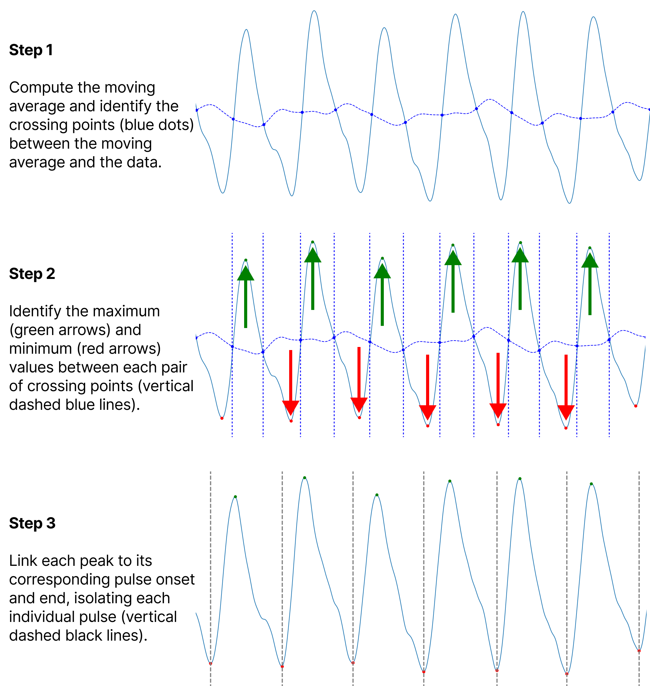
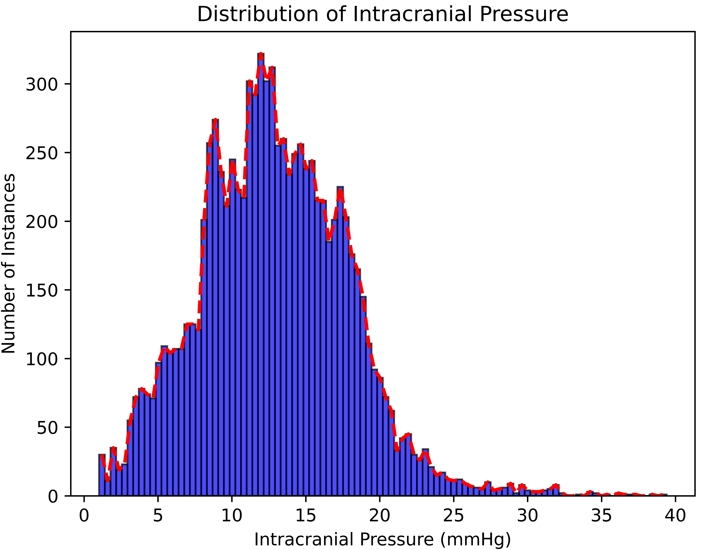

Exploring the Dynamic Relationship: Changes in Photoplethysmography Features Corresponding to Intracranial Pressure Variations
This study investigates the relationship between photoplethysmography (PPG) signals and intracranial pressure (ICP).
Project Details / Background
This study investigates the relationship between photoplethysmography (PPG) signals and intracranial pressure (ICP) through two primary hypotheses.
Firstly, it examines whether alterations in PPG-derived features correspond to changes in ICP levels. Secondly, it explores whether these changes are more pronounced in features derived from cerebral long-distance near-infrared (NIR) PPG data compared to extracerebral short-distance NIR-PPG data.
A clinical dataset comprising synchronised measurements from a non-invasive NIR-PPG sensor and an intra-parenchymal, invasive ICP pressure probe across 27 patients was compiled. From this dataset, two distinct datasets were derived, comprising short and long-distance NIR-PPG data. Within each dataset, 141 features were extracted for every one-minute window of non-invasive NIR-PPG data, including original, first derivative, and second derivative features. Correlation analysis using Spearman's correlation and a non-parametric Kruskal-Wallis test across the range of ICP values were conducted to evaluate the relationship between features and ICP levels.
The results support both hypotheses, showing significant correlations between the features and ICP levels. Specifically, 77.30% and 79.43% of features significantly correlated (p < 0.05) with the label in distal and proximal datasets, respectively. Kruskal-Wallis analysis revealed that 81.56% and 75.89% of features significantly changed (p < 0.05) across ICP groups 0-10, 10-20, and 20-39 mmHg. The distal dataset yielded a meaningfully higher absolute average correlation coefficient of all features and significantly correlated features in-comparison to the proximal dataset of 25.76% and 24.24% respectively. These findings indicate NIR-PPG features are reflective of variations in ICP.
A clinical dataset comprising synchronised measurements from a non-invasive NIR-PPG sensor and an intra-parenchymal, invasive ICP pressure probe across 27 patients was compiled. From this dataset, two distinct datasets were derived, comprising short and long-distance NIR-PPG data. Within each dataset, 141 features were extracted for every one-minute window of non-invasive NIR-PPG data, including original, first derivative, and second derivative features. Correlation analysis using Spearman's correlation and a non-parametric Kruskal-Wallis test across the range of ICP values were conducted to evaluate the relationship between features and ICP levels.
The results support both hypotheses, showing significant correlations between the features and ICP levels. Specifically, 77.30% and 79.43% of features significantly correlated (p < 0.05) with the label in distal and proximal datasets, respectively. Kruskal-Wallis analysis revealed that 81.56% and 75.89% of features significantly changed (p < 0.05) across ICP groups 0-10, 10-20, and 20-39 mmHg. The distal dataset yielded a meaningfully higher absolute average correlation coefficient of all features and significantly correlated features in-comparison to the proximal dataset of 25.76% and 24.24% respectively. These findings indicate NIR-PPG features are reflective of variations in ICP.
Image Gallery

This figure illustrates the major steps of the peak detection algorithm. The process begins with the calculation of the moving average and identification of the crossing points between the moving average and the raw data. Next, the algorithm determines the maximum and minimum values between each pair of crossing points, highlighted by green and red arrows, respectively. Finally, each detected peak is linked to its corresponding pulse onset and end, isolating individual pulses.

A histogram illustrating the distribution of intracranial pressure values within the dataset.
 A figure presenting 10 boxplots illustrating the variation in feature values across different ICP groups. These boxplots correspond to the 10 features with the most significant differences in a Kruskal-Wallis analysis on distal feature data. They display distributions for both proximal and distal feature data. The central line represents the median, the box encompasses the interquartile range (IQR), and the whiskers denote the range within 1.5 times the IQR from the quartiles.
A figure presenting 10 boxplots illustrating the variation in feature values across different ICP groups. These boxplots correspond to the 10 features with the most significant differences in a Kruskal-Wallis analysis on distal feature data. They display distributions for both proximal and distal feature data. The central line represents the median, the box encompasses the interquartile range (IQR), and the whiskers denote the range within 1.5 times the IQR from the quartiles.